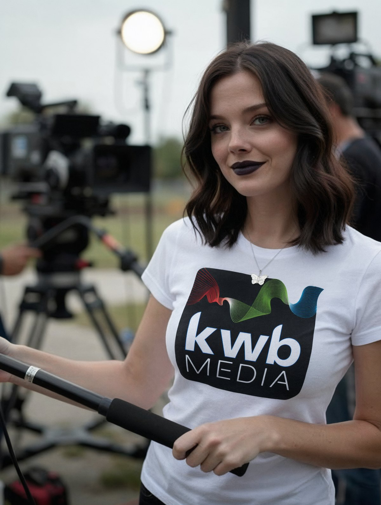

KWB Media LLC is a full service video, multi-media and social media marketing company with two offices in the Hartford and Boston areas.
KWB was founded by award winning editor and producer Ray Wolters in 1998 to service a need in the industry, allowing smaller companies access to the tools that the big boys have enjoyed for years, without the big price tag.
While working in an advertising agency in Connecticut in his early days, Ray learned fast that big shops were getting rich helping the big accounts, and were escorting smaller businesses out the door. Without the high overhead of his previous owners' luxury cars and second homes to worry about, Ray was able to strike out on his own, and give everyday businesses access to high quality videos and marketing without the huge price tag.
What began simply as a love for making film and television has given rise to a whole breadth of services with the same passion. With Dave Sweeney and his video production and corporate communications experience, Charles Jackson with his years of broadcast television producing and videography, and a talented stable of freelancers, there is nothing KWB can't tackle.
We don't want to do one project with you and then part ways — we want to be lifetime partners in your company growth. We have seen our customers grow, we are proud to be a part of that, and we would love to help you too.
Book a Free Consultation